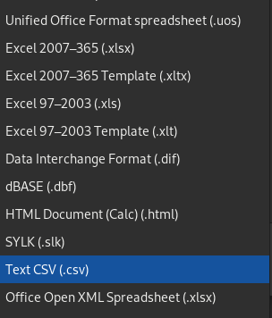
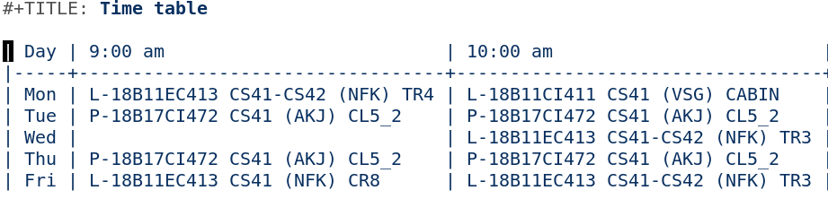

Time table with GNU Emacs
Table of Contents
Introduction
It's not a very well kept secret that Emacs is an extensible editor and can be even extended to manage your university time table. My university originally uses Excel files to distribute time tables which are pain to work with. So I decided to use Emacs built-in table editor to interact with time table with added benefit of being plain text.
Convert Excel file to CSV
Excel files can be easily converted to CSV file from any application but I use Libreoffice to convert files to CSV.
First open the Excel file in and new Libreoffice session
and then by pressing Ctrl-S we are
presented with following options, choose CSV extension
and save the file.

Clean up CSV files
One of the major annoyance with previous time table was that it was given to us without filtering classes from another batches which makes it really long and difficult to parse.
So I wrote a simple Python script to parse the CSV file and filter out necessary classes by taking command line arguments which you can get from here.
$ ttable -h
usage: ttable [-h] -i INPUT -o OUTPUT -c CLASS_NAME
optional arguments:
-h, --help show this help message and exit
-i INPUT, --input INPUT
input file
-o OUTPUT, --output OUTPUT
output file
-c CLASS_NAME, --class_name CLASS_NAME
class name
For example, if my current batch is CS-41 and CSV file is
time-table.csv we can invoke the script as:
~ $ ttable -i time-table.csv -o output.csv -c cs41
This will produce output.csv as a cleaned-up CSV file.
CSV file to beautiful time-table
Open an empty org-mode file in Emacs and then invoke M-x
org-table-import and choose the output csv file.
Here is a sample screenshot of the resultant time-table:
